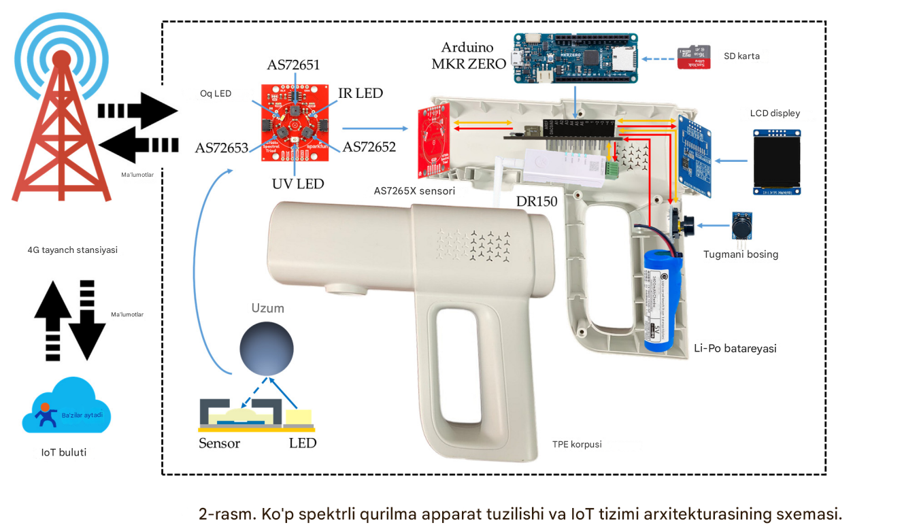
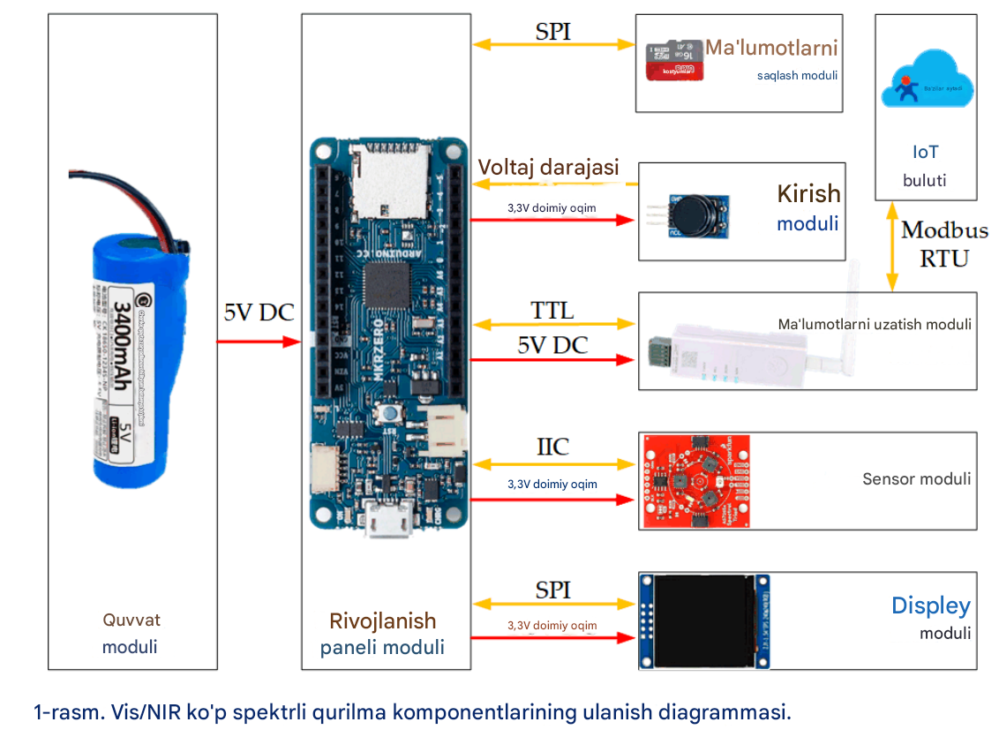
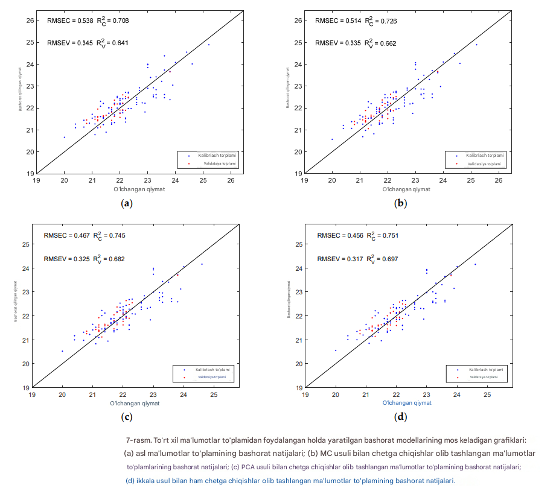

Sunʼiy intellekt va fotonika asosida qishloq xoʻjaligi mahsulotlarining ichki sifatini buzmasdan baholovchi intellektual platforma.
FAO va Jahon Banki maʼlumotlariga koʻra, rivojlanayotgan davlatlarda hosilning katta qismi hosil yigʻish vaqtidagi notoʻgʻri qarorlar tufayli nobud boʻladi.
410 nm dan 940 nm gacha 18 kanal boʻyicha VIS/NIR spektral maʼlumot toʻplab, real vaqtda IoT bulutga sinxronlaymiz va AI orqali sifat qaroriga aylantiramiz.
Hardware toʻliq yigʻildi, firmware ishlaydi, dataset toʻplanmoqda. Ushbu bosqichda tizim Muhandislik Akseleratori talablariga toʻliq javob beradi.

2-rasm · Koʻp spektrli qurilma apparat tuzilishi va IoT tizimi arxitekturasi

1-rasm · Komponentlar ulanish diagrammasi — quvvat, SPI, IIC va Modbus RTU interfeyslari
18 spektral qiymatni oʻrganilgan neyron tarmoqqa yuborib, meva ichidagi SSC, TA va pishish darajasini bashorat qilamiz. Har bir oʻlchov modelni yanada aniqroq qiladi.
Xom 18 kanalli spektrni oddiy PLS bilan qurish 0.641 R²V beradi. Monte Carlo va PCA orqali chetga chiqishlarni olib tashlash, Savitzky–Golay smoothing va UVE feature selection ketma-ket qoʻllanilganda model aniqligi +26% ga koʻtariladi — bu 18 kanalli past oʻlchamli sensor uchun yuqori koʻrsatkich.

7-rasm · Toʻrt xil maʼlumotlar toʻplamidan foydalangan holda yaratilgan bashorat modellarining natijalari (ilmiy tadqiqot maʼlumotlari)
Bozordagi hech bir yechim bir vaqtning oʻzida portativ, buzmaydigan, 18 kanalli, AI bilan bulutga ulangan va ommaviy narxda emas.
| Xususiyat | Laboratoriya | Portativ Refractometr | Xorijiy F-750 | AgroPhotonics |
|---|---|---|---|---|
| Buzmasdan tahlil | ✕ | ✕ | ✓ | ✓ |
| Portativ · dala uchun | ✕ | ✓ | ✓ | ✓ |
| Real-time natija | ✕ | ◐ | ✓ | ✓ |
| Cloud sinxronizatsiya | ✕ | ✕ | ◐ | ✓ |
| AI · qaror qoʻllab-quvvatlash | ✕ | ✕ | ✕ | ✓ |
| 18 spektral kanal | ✓ | ✕ | ✓ | ✓ |
| Dataset toʻplash (fleet) | ✕ | ✕ | ✕ | ✓ |
| Fermer uchun hamyonbop | ✕ | ✓ | ✕ | ✓ |
| Kengaytiriladigan platforma | ✕ | ✕ | ◐ | ✓ |
Ikki texnologiyaning uzviy birligi
Mahsulotga zarar yetmaydi
Har bir oʻlchov bulutda
Raqamli qishloq xoʻjaligi infratuzilmasi
Rizamat, Husayni, Namangan navlari uchun
OTA yangilanishlar bilan flot boshqaruvi
Hisob-kitoblarga koʻra, boshlangʻich xarajatlar 12–18 oy ichida qoplanadi. "Raqamli Oʻzbekiston 2030" strategiyasiga toʻliq mos keladi.
Kelajak qishloq xoʻjaligi uchun sunʼiy intellekt asosidagi sifat boshqaruvi platformasi.